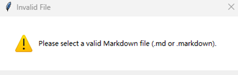
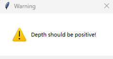
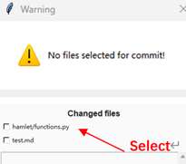
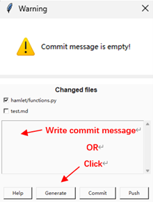
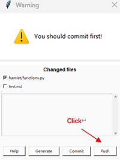
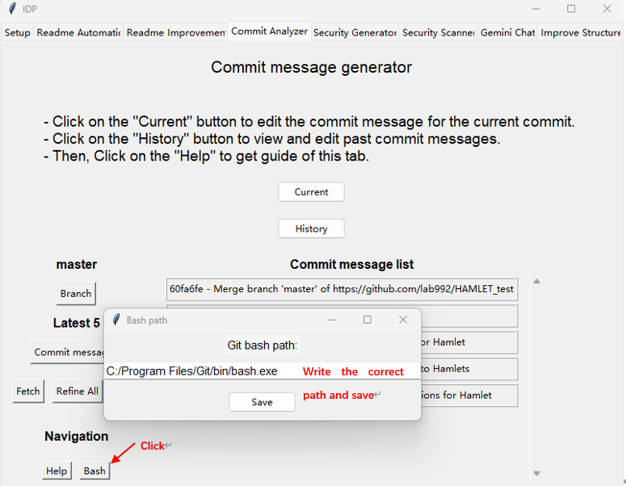

Troubleshooting
Readme Improvement:
Error: “Please select a valid Markdown file (.md or .markdown)”
Cause: You haven’t select a valid Markdown file.
Solution: Ensure that your repo has a valid README markdown.
Reference image:
Readme Improvement & Creation:
Error: “Please select a valid Markdown file (.md or .markdown)”
Cause: Depth should be positive!.
Solution: Enter positive depth. If depth you enter is bigger than the max depth of your repo. The program will automatically use max depth instead.
Reference image:
Commit Analyzer - Current
Error: “No files selected for commit!”
Cause: Commit message is based on code diff. You should first select changed files with code diff.
Solution: Select change files.
Reference image:
Commit Analyzer - Current
Error: “Commit message is empty”
Cause: You cannot commit an empty message.
Solution: Generate commit message by clicking ‘Generate’. Or write commit message manually.
Reference image:
Commit Analyzer - Current
Error: “You should commit first!”
Cause: No commited file detected.
Solution: Click ‘Commit’.
Reference image:
Commit Analyzer - Histroy
Error: “No commits fetched.”
Cause: You haven’t fetched commit. Fetch first.
Solution: Click ‘fetch’.
Reference image:
Commit Analyzer - History
Error: “No edited commits to process”
Cause: You haven’t refined any commit message.
Solution: Click ‘Refine all’ or click single commit message on right frame to refine.
Commit Analyzer - History
Error: “No branch selected. Please select a branch first.”
Cause: You haven’t selected branch.
Solution: Click ‘Branch’ to select one.
Commit Analyzer - History
Error: “Invalid commit selection”
Cause: Commit selection parameter is wrong. Ensure the number is a digit.
Solution: Edit the number to a correct one.
Commit Analyzer - History
Error: “ usage: git filter-branch [–setup ] [–subdirectory-filter ] [–env-filter ]
[–tree-filter ] [–index-filter ]
[–parent-filter ] [–msg-filter ]
[–commit-filter ] [–tag-name-filter ]
[–original ]
[-d ] [-f | –force] [–state-branch ]
[–] […]
bash: if [ “$GIT_COMMIT” = “f8e4a335625b2c6e7300837f6f2cffda299a4a5a” ];
then
echo “[feat] Introduce new mathematical functions for Hamlet TEST”
echo “”
echo “Reason for Change: To enhance the functionality of Hamlet by adding new mathematical functions, enabling users to perform more complex calculations and analyses.”
echo “”
echo “What was done: Introduced the get_one_plus_one function in the functions.py file, replacing the previously unused get_two_plus_two function. Removed the unused get_OK function and updated the constants.py file to remove the unused K_TEST constant.”
echo “”
echo “Impact/Benefits: This change expands Hamlets capabilities, allowing users to perform more advanced calculations and analyses, ultimately enhancing the tools utility and value.”
else cat
fi: No such file or directory”
Cause: Git Bash path is wrong.
Solution: Edit the number to a correct one.
Reference image:
